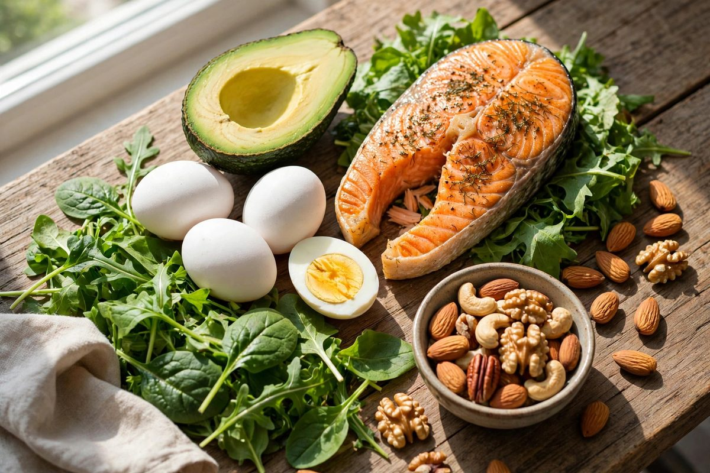
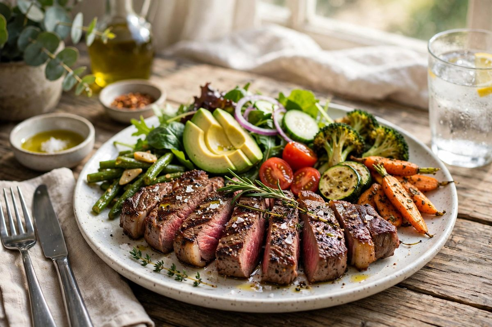
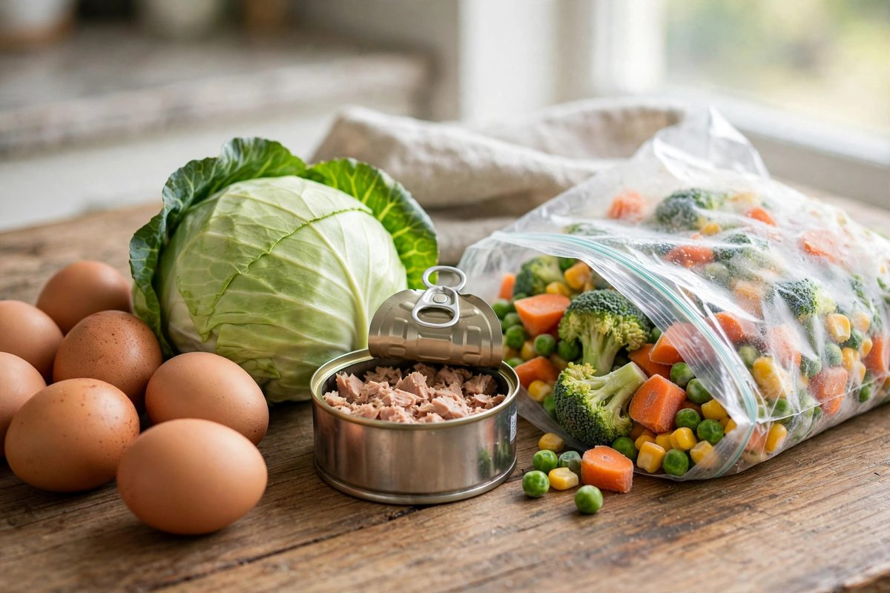

Low-Carb Basics: How a Low-Carb Diet Works
The basics of low-carb eating: what it is, how it works, which foods fit, and how to start without feeling deprived.
Clear guides, free calculators and practical meal ideas for a lower-carb life. Search below to find the guide you need.
Try: keto, breakfast, snacks, desserts, budget, travel

The basics of low-carb eating: what it is, how it works, which foods fit, and how to start without feeling deprived.

A clear low-carb foods list: the vegetables, proteins, fats and dairy to choose, and the foods to limit or avoid.

Ten practical low-carb breakfast ideas, from eggs and yoghurt to chia pudding and leftovers, with tips for busy mornings.

Low-carb snacks that actually fill you up: nuts, cheese, eggs, vegetables and dips, with portion tips and what to avoid.

Low-carb vs keto explained: carb limits, ketosis, who each suits, and how to choose between them.

How to eat out on a low-carb diet: what to order, swaps that work, drinks to choose, and fast food options.

Low-carb lunch ideas for work and home: salads, wraps, soups and leftovers that keep you full until dinner.

Seven easy low-carb dinners for weeknights: salmon, chicken, beef, pork and vegetarian options that take under 30 minutes.

Low-carb desserts that work: chocolate mousse, berry cream, cheesecake and baked treats, with sweetener tips.
Bread alternatives for low-carb eating: cloud bread, lettuce wraps, almond flour buns and cauliflower flatbreads.
Low-carb drinks: water, tea, coffee, and the alcoholic drinks that fit, plus the sugary drinks to avoid.

Low-carb meal prep: batch cooking, storage, containers and a simple weekly plan that saves time and money.

A beginner's guide to the first week of low-carb eating: what to eat, what to expect, and how to get through day three.
Exercising on a low-carb diet: what to expect, how performance changes, and how to fuel workouts without carbs.
A weekly low-carb shopping list: the staples to buy every time, the fresh foods to choose, and the items to skip.

Seven low-carb myths debunked: fat, cholesterol, kidneys, fruit, and whether low-carb is just a fad.

How to eat low-carb on a budget: cheap proteins, seasonal vegetables, batch cooking and the foods to skip.

How to stay low-carb while travelling: packing snacks, airport food, hotel breakfasts and eating out abroad.

How low-carb eating affects blood sugar: steadier levels, fewer spikes, and why people with diabetes must talk to a doctor first.
How to make low-carb a lasting habit: planning, flexibility, handling setbacks, and building a routine that fits your life.
Net carbs are the carbs that affect blood sugar: total carbs minus fibre.
Work out your daily protein, fat and carbohydrate grams from your calorie target and your chosen split.
Body mass index is weight in kilograms divided by height in metres squared.
Pick a day and get a simple low-carb menu for breakfast, lunch and dinner.
Search our list to see the net carbs in a typical serving of common low-carb foods.